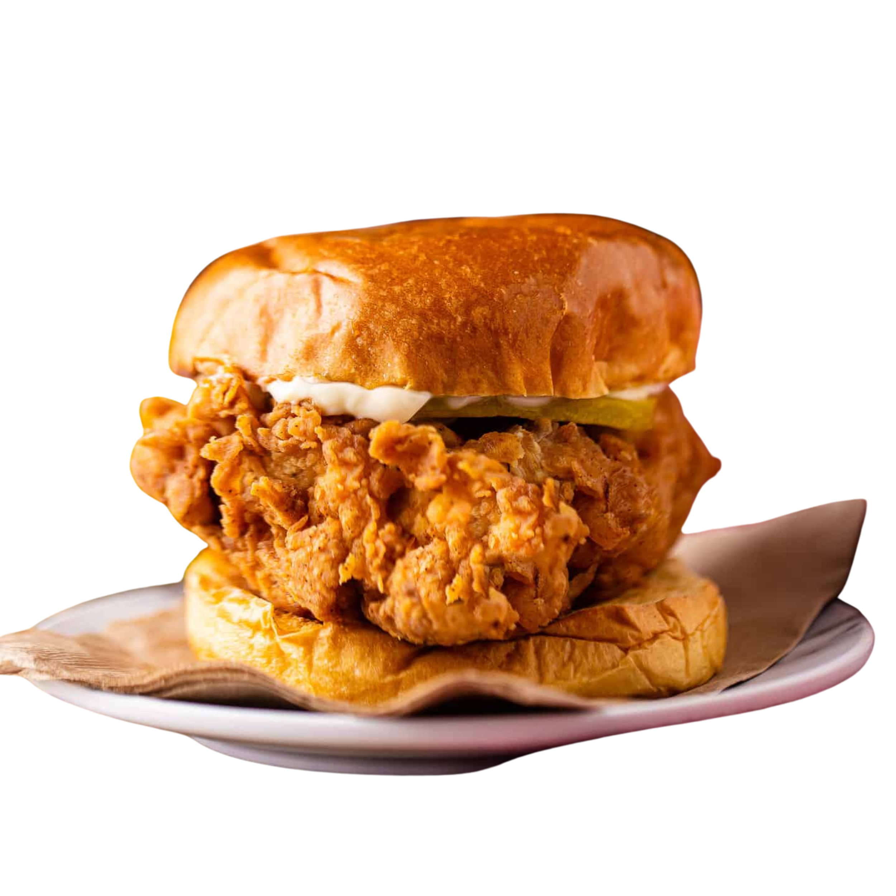

Taste the trend,
Bite through
The Daapoer
The Daapooer is a trendy food spot known for serving up delicious Japanese-inspired dishes with a modern twist. The menu features favorites like crispy Karaage, savory Katsu Burgers, light and crunchy Tempura, and hearty Japanese Curry. Each dish is crafted with care, blending authentic flavors with a contemporary touch to deliver a memorable dining experience. Whether you're craving a quick bite or a full meal, The Daapooer promises bold flavors and satisfying portions. With the slogan "Taste the Trend, Bites through The Daapooer," this spot is all about bringing fresh, popular tastes to the table while keeping it exciting for every foodie.
Learn More
